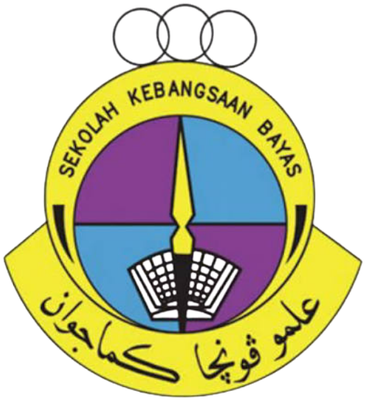
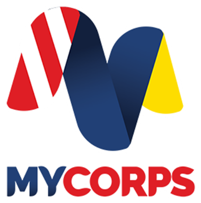

Langkawi UNESCO Global Geopark
Laman Teduh
Geo Inspirasi
SK Bayas
Sila scan gambar di banner dinding sekolah. Pemandangan akan hidup, dan setiap nombor bercerita.
1Benarkan akses kamera
2Scan gambar di banner dinding sekolah
3Sentuh nombor untuk nota